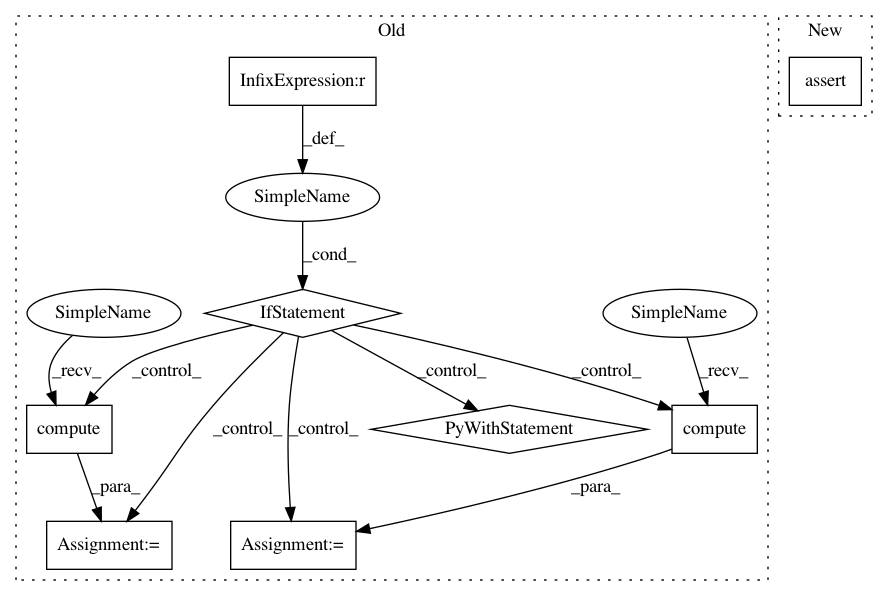

382bbb606ab6d60ae1e15c7a5e78eb7b9e855275,tests/model_selection/test_incremental.py,,_test_search_basic,#Any#Any#Any#Any#Any#Any#Any#,237
Before Change
search = InverseDecaySearchCV(model, params, **kwargs)
else:
raise ValueError()
if memory == "distributed" and input_type == "dataframe":
with pytest.raises(TypeError, match=r"to_dask_array\(lengths=True\)"):
await search.fit(X, y, classes=[0, 1])
// Dask-ML raised a type error; let"s implement the suggestion
X = await c.compute(c.submit(X.to_dask_array, lengths=True))
y = await c.compute(c.submit(y.to_dask_array, lengths=True))
await search.fit(X, y, classes=[0, 1])
assert search.history_
for d in search.history_:
After Change
assert proba.shape[1] == 2
assert proba.shape[0] == 1000 or math.isnan(proba.shape[0])
assert log_proba.shape[1] == 2
assert log_proba.shape[0] == 1000 or math.isnan(proba.shape[0])
assert isinstance(proba, da.Array)
assert isinstance(log_proba, da.Array)
In pattern: SUPERPATTERN
Frequency: 3
Non-data size: 8
Instances
Project Name: dask/dask-ml
Commit Name: 382bbb606ab6d60ae1e15c7a5e78eb7b9e855275
Time: 2020-07-21
Author: mrocklin@gmail.com
File Name: tests/model_selection/test_incremental.py
Class Name:
Method Name: _test_search_basic
Project Name: dask/dask-ml
Commit Name: 382bbb606ab6d60ae1e15c7a5e78eb7b9e855275
Time: 2020-07-21
Author: mrocklin@gmail.com
File Name: tests/model_selection/test_incremental.py
Class Name:
Method Name: _test_search_basic
Project Name: pytorch/ignite
Commit Name: 7753eabc5af8bed2cca4713805613adfbc460a8e
Time: 2021-02-21
Author: francois.cokelaer@gmail.com
File Name: tests/ignite/metrics/test_recall.py
Class Name:
Method Name: _test_distrib_integration_multilabel
Project Name: pytorch/ignite
Commit Name: 7753eabc5af8bed2cca4713805613adfbc460a8e
Time: 2021-02-21
Author: francois.cokelaer@gmail.com
File Name: tests/ignite/metrics/test_precision.py
Class Name:
Method Name: _test_distrib_integration_multilabel